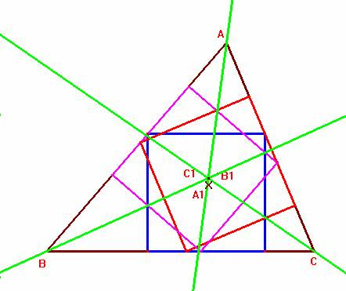
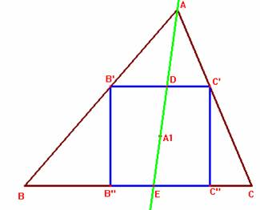

Problema 93
Dado un triángulo ABC, se inscribe en él un cuadrado uno de cuyos lados se apoye en el lado BC. Sea A1 el centro de este cuadrado. De igual modo se construyen cuadrados con lados apoyados en AC y en AB y cuyos centros son los puntos B1 y C1 respectivamente.
Probar que las rectas AA1, BB1 y CC1 son concurrentes.
(Enunciado tomado del artículo Otros problemas de la I.M.O. de Washington, 2001 publicado en la Gaceta de la Real Sociedad Matemática Española, , pág. 708-709, septiembre – diciembre de 2002)
Solución de F. Damián Aranda Ballesteros profesor de Matemáticas del IES Blas Infante en Córdoba (21 de abril de 2003)


Examinemos uno de los cuadrados inscritos según el enunciado. Para esta figura en cuestión, consideremos la siguiente notación:B'D = m = EC''; DC' = n = B''E;
p= m+n ; (p=lado del cuadrado)
BB'' = m'; EC = n'
En definitiva con los pares de triángulos semejantes, AB'D y ABE por un lado y el par ADC' y AEC por otro, podemos constatar la relación que determina la ceviana AE en el triángulo inicial con respecto a los segmentos BE y EC.
Nos quedamos con la última relación encontrada.
Operando de igual modo con las cevianas correspondientes a los cuadrados apoyados en los lados CA y AB obtendríamos con respecto a los segmentos determinados en estos lados, las siguientes expresiones respectivamente:
; .
En definitiva, utilizando el recíproco del Teorema de Ceva , si el producto de las tres expresiones encontradas es igual a 1 entonces las tres cevianas concurrirían en un punto.
Y esto es cierto, de modo trivial:
[ ]*[ ]*[ ]= 1
Luego en efecto las rectas AA1, BB1 y CC1 son concurrentes. c.q.d